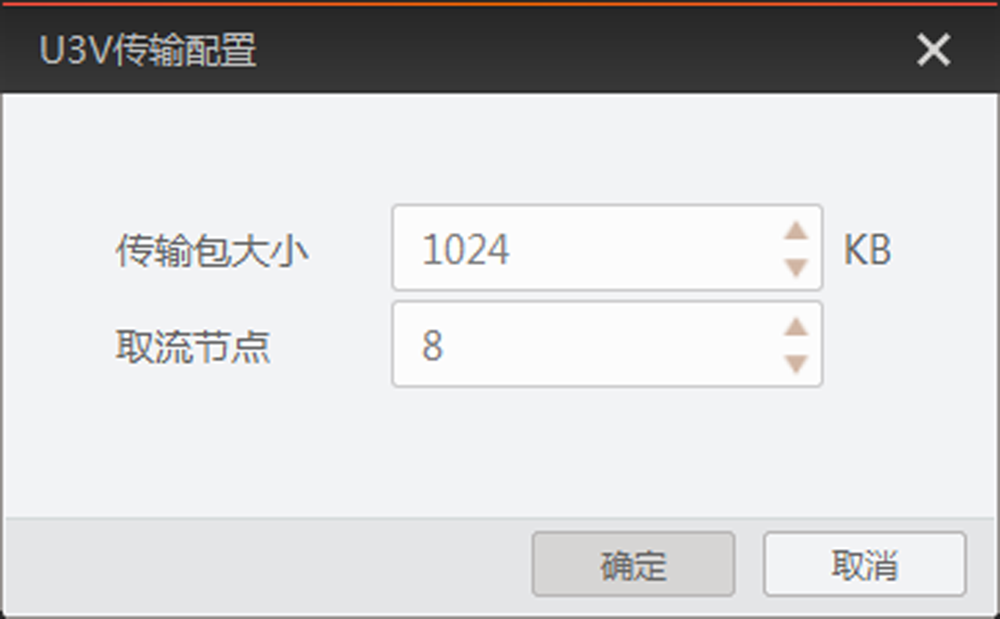

U3V相机管理
添加U3V相机
U3V相机可通过两种方法添加，分别为自动枚举本地相机和CMD命令方式添加相机。
-
自动枚举：U3V相机自动枚举的方法与网口相机类似，具体可参考自动枚举网口相机章节。
-
CMD命令：U3V相机通过CMD命令方式添加的方法与网口相机类似，具体可参考CMD命令方式添加相机章节。
状态介绍
对于不同状态的U3V相机，设备列表的相机图标有所差别。
U3V相机的状态说明请见下表。
|
图标 |
状态 |
含义 |
|---|---|---|
|
可用 |
相机处于可连接状态，双击相机可以正常连接和使用。 |
|
|
已连接 |
客户端已经连接该相机并可以进行相关操作。 |
|
|
|
采图 |
客户端已经连接该相机并开始采集图像。 |
|
|
占用 |
该相机当前被其他软件或进程连接，不能通过当前的客户端再次连接。需要先通过其他软件或进程断开连接才能通过当前客户端连接。 |
|
|
不可达 |
PC的USB驱动安装失败，需要重新安装USB驱动。 |
|
|
可用（U2环境） |
相机处于可连接状态，双击相机可以正常连接和使用。但相机处于USB2.0环境。 |
|
|
已连接（U2环境） |
客户端已经连接该相机并可以进行相关操作。但相机处于USB2.0环境。 |
|
|
采图（U2环境） |
客户端已经连接该相机并开始采集图像。但相机处于USB2.0的环境，帧率有所降低；若对帧率有较高要求，请将相机连接到PC的USB3.0接口上。 |
|
占用（U2环境） |
该相机当前被其他软件或进程连接，不能通过当前的客户端再次连接。需要先通过其他软件或进程断开连接才能通过当前客户端连接。同时相机处于USB2.0环境。 |
|
|
不可达（U2环境） |
PC的USB驱动安装失败，需要重新安装USB驱动。同时相机处于USB2.0环境。 |


其他功能
设备列表USB接口部分还可对USB接口和U3V相机进行相关功能的设置，例如U3V传输配置、相机置顶、重命名用户ID等。
USB接口
接口信息：选中设备列表的USB接口，可在设备/接口信息区域显示该USB接口的相关信息，包括描述、厂商ID、设备ID、子系统ID、版本。
U3V相机
-
设备信息：选中设备列表显示的U3V相机，可在设备/接口信息区域显示该U3V相机的相关信息，包括设备名称、型号、序列号、GUID、厂商、设备版本。
-
U3V传输配置：选中设备列表中已连接的相机，右键单击选择U3V传输配置，可在弹出的U3V传输配置窗口中设置相机的传输包大小和取流节点，如下图所示。
-
传输包大小：该参数可调整相机传输的数据包大小，范围为64 ~ 20480 KB，默认为1024 KB。增大该参数可适当降低相机采集图像时PC的CPU占用率。
-
取流节点：该参数可调整相机的传输通道个数，范围为1 ~ 10，默认为8。可根据PC性能、PC内存使用率、相机采集帧率和图像数据大小进行设置。

图 1 U3V传输配置说明U3V传输配置功能仅在当前客户端U3V相机连接期间有效，在其他软件中使用时，需调用SDK相关接口进行设置。
-
其他与网口相机相同，具体介绍请查看其他功能章节。